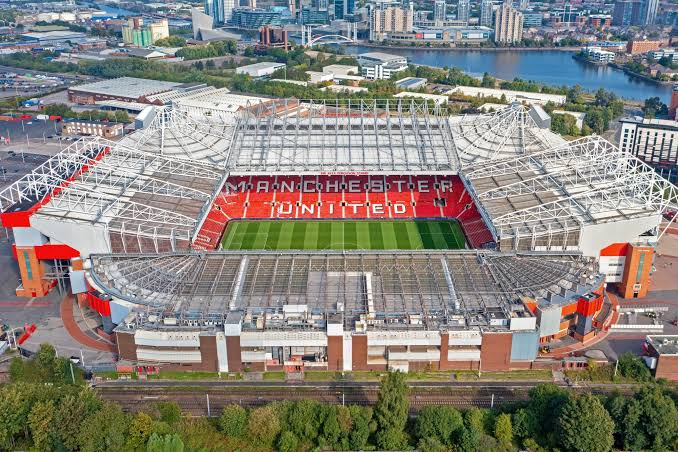
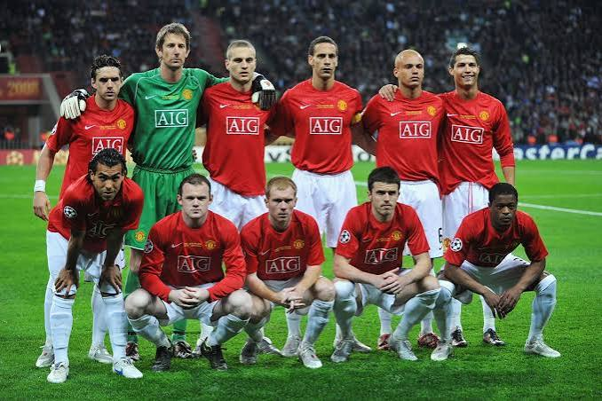

Founded
1878
England
Learn about the history, home stadium, club information, and major achievements of Manchester United.
Introduction
Manchester United is a professional soccer club based in Manchester, England. The club is one of the most recognized English soccer teams and has supporters around the world.
Manchester United plays its home matches at Old Trafford, a stadium that has been the club's home for more than a century.

About the Club
The club was originally founded in 1878 as Newton Heath LYR Football Club. In 1902, the club changed its name to Manchester United.
Over the years, Manchester United has become known for its successful teams, famous players, strong supporters, and long history in English and European soccer.

Club Details
1878
Manchester, England
Old Trafford
Red, White, and Black
Success